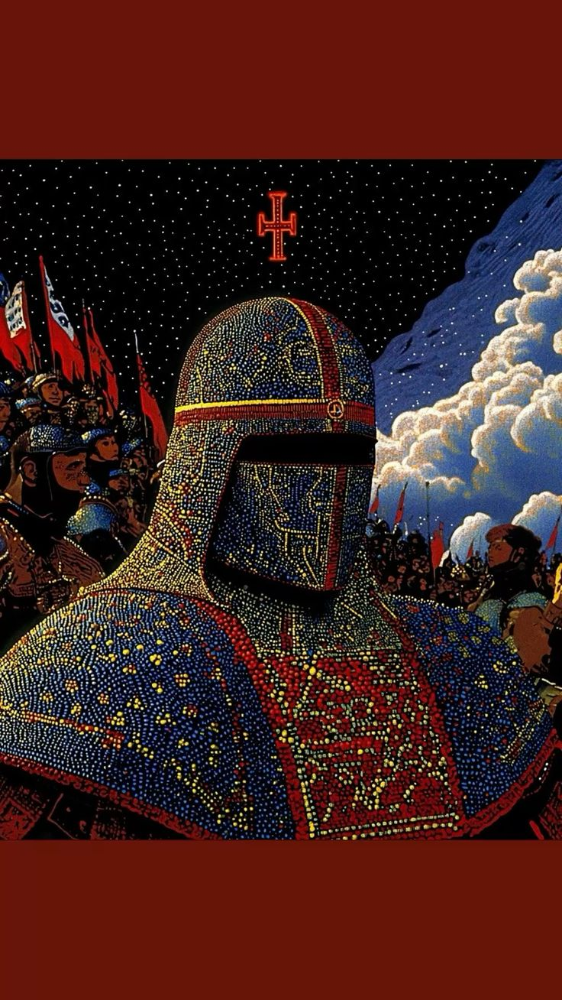
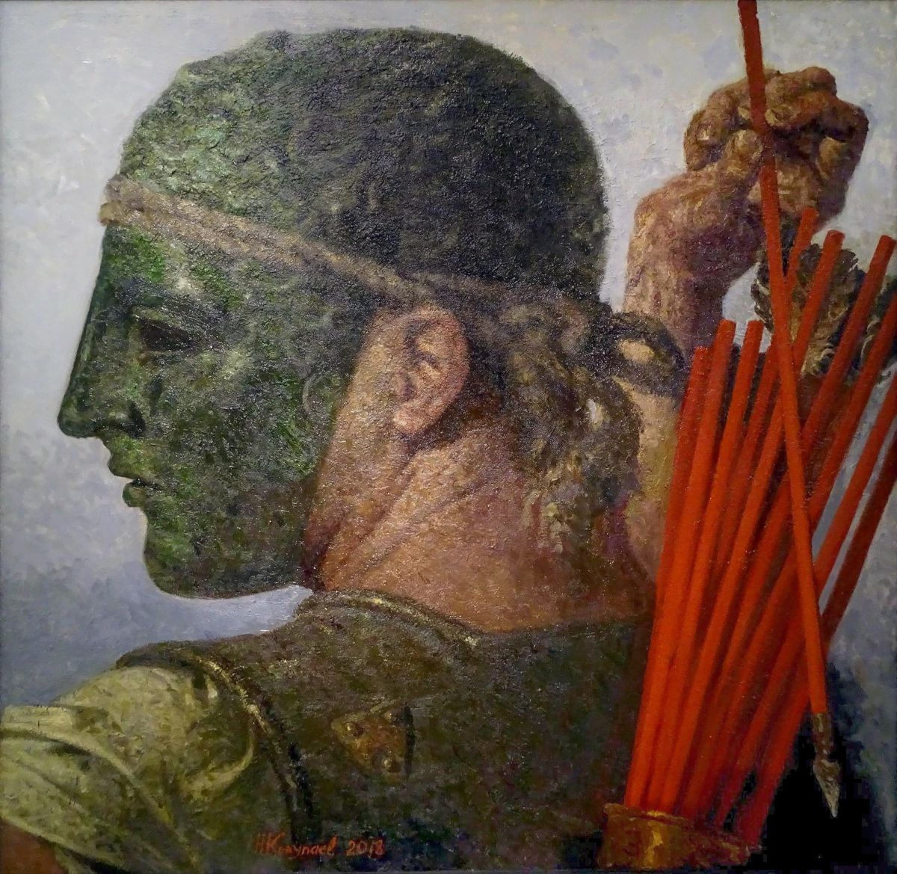

NATIVE TOR ROUTING
SpartaBrowser runs its own native Tor process. With a single click, route your traffic through relays across the globe, hiding your physical IP address and enabling access to Onion services directly.
SpartaBrowser is a minimalist, sandboxed web browser built for absolute privacy. Every session runs in isolated ephemeral memory. Toggle native Tor routing with one click to hide your IP address and defeat trackers.
Choose the installer matching your operating system. Each package includes the bundled Tor Expert Bundle for one-click anonymous browsing.
All builds are unsigned preview releases. On macOS, right-click → Open to bypass Gatekeeper. On Linux, chmod +x the AppImage before running.
SpartaBrowser runs its own native Tor process. With a single click, route your traffic through relays across the globe, hiding your physical IP address and enabling access to Onion services directly.
No residual logs or browser history persist. Cookies, local storage, and cached assets are held in isolated memory partitions that are immediately purged upon closing the application window.

Leverage sandbox isolation per session. Keep your navigation workflows segregated to block cross-origin leaks, cookie matching, and fingerprinting scripts automatically.

DuckDuckGo searches are synchronized with the browser's light and dark mode preferences. Automatic scrubbing of referrers and integration of DNT headers keeps search engines blind to your actions.